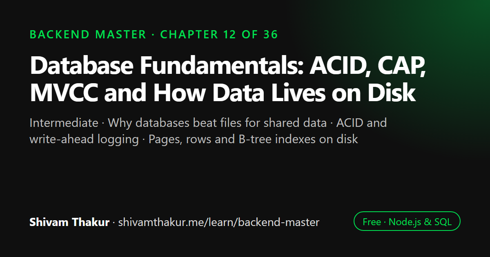

Chapter 12 of 36 · Intermediate
Database Fundamentals: ACID, CAP, MVCC and How Data Lives on Disk
Database Fundamentals — Why Databases Exist, ACID, CAP and How Data Really Lives on Disk

Databases exist because files cannot safely handle concurrent updates. This chapter demonstrates a lost-update bug with a JSON file, then explains ACID, write-ahead logging, pages and B-trees, MVCC, the CAP and PACELC trade-offs, connection pooling and SQL injection on a real PostgreSQL.
In this chapter you will learn
- Why databases beat files for shared data
- ACID and write-ahead logging
- Pages, rows and B-tree indexes on disk
- MVCC, CAP and PACELC
- Connection pooling and SQL injection
12.0 Why This Chapter Matters
Part 3 is the longest part of this book, and for good reason: the database is the heart of almost every backend. Servers are cheap and replaceable. You can restart them, clone them, throw them away. The data is none of those things. It is the business. When a company loses its database, it usually loses the company.
Most backend performance problems, most correctness bugs, and most scaling walls trace back to the same place: how data is stored, queried and protected. Engineers who understand databases deeply are consistently the most valuable people on a backend team.
By the end of this chapter you will know:
- Why we don't just save data in files (and you'll watch that approach lose 199 of 200 sales).
- What a database actually does for you.
- What ACID really means, shown with working transactions.
- How a database physically stores rows on disk (pages, tuples, indexes), with real measurements.
- What CAP and PACELC actually say (and the common misunderstandings).
- How to choose between the database families, and why PostgreSQL is the default for this book.
- How to connect Node.js to PostgreSQL safely: parameterized queries and connection pools.
Every measurement and output in this chapter came from a real PostgreSQL 17 instance run while the chapter was written.
12.1 Why Not Just Use Files?
Imagine you build ShopLine's stock tracking the simplest possible way, in a JSON file:
async function sellOneFromFile() {
const data = JSON.parse(await readFile('counter.json', 'utf8')); // 1. read
data.stock -= 1; // 2. modify
await writeFile('counter.json', JSON.stringify(data)); // 3. write
}It reads like it should work, and with one customer at a time it does. Now let 200 customers buy at once. Starting stock is 1,000, so afterwards it must be 800. Here is a real run, file versus PostgreSQL:
await Promise.all(Array.from({ length: 200 }, sellOneFromFile)); // JSON file
await Promise.all(Array.from({ length: 200 }, () => // PostgreSQL
pool.query('UPDATE demo_stock SET stock = stock - 1 WHERE id = 1')));JSON file : started 1000, sold 200 -> stock = 999 (correct is 800)
PostgreSQL: started 1000, sold 200 -> stock = 800 (correct is 800)The file lost 199 of 200 sales. Not "a few." Almost all of them.
What happened? A race condition
Many requests read the same starting value (1,000) before any of them wrote back. Each computed 999 and wrote 999. They overwrote each other's results, a lost update.
request A: read 1000 ───────── write 999
request B: read 1000 ── write 999 (B's work is erased by A's write)
request C: read 1000 ─────────────── write 999
└── all three saw 1000, all three wrote 999: two sales vanishedNode being single-threaded doesn't save you: every await is a gap where other requests run. And with two server instances, or any other process touching the file, it gets worse.
The five things files can't give you
| Problem | With a plain file | What a database provides |
|---|---|---|
| Concurrency | Lost updates, corrupted writes | Locks and isolation: concurrent changes don't trample each other |
| Crash safety | A crash mid-write leaves a half-written, corrupt file | Atomic, durable commits: either the whole change happened or none of it |
| Querying | Read the entire file to find one record | Indexes and a query planner: find one row among millions in microseconds |
| Integrity | Nothing stops stock = -5 or an order for a deleted product |
Constraints: types, NOT NULL, UNIQUE, CHECK, foreign keys |
| Scale & sharing | One file, one machine, locking by hand | Network access, many clients, replication, access control, backups |
And note the bonus at the end of that demo: the database rejects impossible data:
await pool.query('UPDATE demo_stock SET stock = stock - 5000 WHERE id = 1');
// → error code 23514, constraint "demo_stock_stock_check" (CHECK (stock >= 0))You can write all these features yourself. People have, many times, and they spent years making them correct. That's what a database is: decades of hard-won engineering for the hardest problems of storing data, packaged behind one interface.
12.2 What a Database Management System Does
A database is the stored data. A DBMS (Database Management System) is the software that manages it: PostgreSQL, MySQL, MongoDB, Redis, SQLite. In everyday speech both are called "the database."
Inside, every DBMS has the same set of jobs:
your app (Node.js)
│ SQL / commands over a network connection
▼
┌───────────────────────────────────────────────────────────────┐
│ 1. CONNECTION MANAGER authenticate, one backend per client │
│ 2. QUERY PARSER text → structure; check names & types │
│ 3. QUERY PLANNER/ choose HOW to run it: which index? │
│ OPTIMIZER which join order? (cost-based) │
│ 4. EXECUTOR run the plan, produce rows │
│ 5. TRANSACTION MANAGER ACID: begin, commit, rollback, locks │
│ 6. BUFFER CACHE keep hot pages in RAM │
│ 7. STORAGE ENGINE pages, tables, indexes on disk │
│ 8. WRITE-AHEAD LOG (WAL) record changes first, for crash safety │
│ 9. REPLICATION/BACKUP copies for safety and read scaling │
└───────────────────────────────────────────────────────────────┘
│
▼
disk (SSD)The most important insight for you as an application developer is box 3. With SQL you describe what you want and the planner decides how. That's why the same query can run in 0.1 ms or 10 seconds depending on whether an index exists. Understanding the planner (Chapter 15) is the difference between guessing and engineering.
12.3 The Families of Databases
"Database" isn't one thing. The right tool depends on the shape of your data and your access patterns.
| Family | Data shape | Examples | Best for | Weak at |
|---|---|---|---|---|
| Relational (SQL) | Tables of rows, linked by keys | PostgreSQL, MySQL/MariaDB, SQL Server, Oracle, SQLite | Most business data: users, orders, payments, anything with relationships and rules | Horizontal scale-out of writes (harder, not impossible) |
| Document | JSON-like documents | MongoDB, Couchbase, Firestore | Flexible/nested data that's read as a unit; rapid schema evolution | Complex cross-document joins/transactions (improving) |
| Key-value | key → value |
Redis, DynamoDB, Memcached | Caches, sessions, counters, extreme speed/throughput | Queries beyond key lookup |
| Wide-column | Rows with flexible columns, partitioned | Cassandra, ScyllaDB, HBase | Massive write throughput, time-ordered data at huge scale | Ad-hoc queries, joins |
| Graph | Nodes and relationships | Neo4j, Amazon Neptune | Social networks, recommendations, fraud rings (deep relationship traversal) | Everything else |
| Time-series | Timestamped measurements | TimescaleDB, InfluxDB, Prometheus | Metrics, IoT, monitoring | General-purpose use |
| Search engine | Inverted index over text | Elasticsearch, OpenSearch, Meilisearch | Full-text search, faceting, log analytics | Being the source of truth |
| Vector | Embeddings for similarity | pgvector, Pinecone, Qdrant | Semantic search, AI retrieval | Exact-match transactional data |
| Columnar / warehouse (OLAP) | Column-oriented storage | BigQuery, Snowflake, ClickHouse, Redshift | Analytics over billions of rows | Many small updates (OLTP) |
| Object storage | Blobs (files) | Amazon S3, GCS | Images, video, backups, big files | Querying |
Real-Life Analogy: Choosing Storage at Home
A filing cabinet with labeled folders and a cross-reference index (relational): excellent for records that relate to each other and must stay consistent. A sticky note on the fridge (key-value cache): instant to read, not for anything important. A warehouse for bulky items (object storage): cheap and huge, but you don't "query" it. A library card catalog (search engine): built so you can find books by any word. You wouldn't use the fridge for tax records or the warehouse to look up a phone number. Each family is built for one job.
OLTP vs OLAP
Two very different workloads hide inside "a database":
| OLTP (transactions) | OLAP (analytics) | |
|---|---|---|
| Typical query | "Get order #9", "place an order" | "Total revenue per country per month for 3 years" |
| Touches | A few rows | Millions/billions of rows, few columns |
| Writes | Many small, concurrent | Bulk loads |
| Latency goal | Milliseconds | Seconds to minutes |
| Storage | Row-oriented | Column-oriented |
| Examples | PostgreSQL, MySQL | BigQuery, ClickHouse, Snowflake |
Row-oriented storage keeps all of one row's fields together (great when you want the whole order). Column-oriented keeps each column together (great when you want only revenue across a billion rows, and it compresses far better since neighbouring values are alike):
ROW STORE (OLTP) COLUMN STORE (OLAP)
[id1|name1|price1|country1] id: [1, 2, 3, 4 ...]
[id2|name2|price2|country2] name: [n1, n2, n3, n4 ...]
[id3|name3|price3|country3] price: [p1, p2, p3, p4 ...] ← SUM(price) reads ONLY this
country: [c1, c2, c3, c4 ...]Don't run heavy analytics on your production OLTP database; copy data to a warehouse (Chapter 20).
12.4 ACID: The Four Promises of a Transaction
A transaction is a group of operations treated as one unit. ACID names the guarantees a good transactional database gives it.
Real-Life Analogy: Bank Transfer
Moving ₹70 from Asha's account to Ravi's has two steps: subtract from Asha, add to Ravi. Both must happen, or neither. If the bank's computer crashed between the steps and Asha's money was gone but Ravi's hadn't arrived, ₹70 would simply vanish.
12.4.1 A: Atomicity: all or nothing
Here is exactly that scenario with real output. A crash is simulated between the two steps:
async function transfer(from, to, amount, { useTransaction }) {
const c = await pool.connect();
try {
if (useTransaction) await c.query('BEGIN');
await c.query('UPDATE accounts SET balance = balance - $1 WHERE id = $2', [amount, from]);
if (amount === 70) throw new Error('simulated crash between the two steps');
await c.query('UPDATE accounts SET balance = balance + $1 WHERE id = $2', [amount, to]);
if (useTransaction) await c.query('COMMIT');
return 'ok';
} catch (e) {
if (useTransaction) await c.query('ROLLBACK');
return `failed: ${e.message}`;
} finally {
c.release(); // ALWAYS give the connection back
}
}start 1:100 2:50
no transaction, crash failed: simulated crash... -> 1:30 2:50 <- 70 vanished!
transaction, crash failed: simulated crash... -> 1:100 2:50 <- nothing changed
transaction, success ok -> 1:70 2:80
transaction, overdraft failed: ... violates check constraint "accounts_balance_check" -> 1:70 2:80Without a transaction, the debit stuck and the credit never happened: ₹70 destroyed. With a transaction, the crash triggered a ROLLBACK and the database returned to exactly the prior state. Atomicity.
The basic shape you'll use constantly:
BEGIN;
UPDATE accounts SET balance = balance - 70 WHERE id = 1;
UPDATE accounts SET balance = balance + 70 WHERE id = 2;
COMMIT; -- or ROLLBACK; to undo everything since BEGIN12.4.2 C: Consistency: valid state to valid state
A transaction may only move the database from one valid state to another valid state, where "valid" means all your declared rules hold: types, NOT NULL, UNIQUE, CHECK, foreign keys. In the last row above, the overdraft violated CHECK (balance >= 0), so the whole transaction was refused and rolled back.
Two honest notes:
- ACID's "C" is mostly your responsibility: the database enforces the rules you declare. If you declare none (no constraints), it has nothing to enforce. Declare your rules in the schema (Chapter 14).
- This "consistency" is not the same as CAP's "consistency" (§12.7). Same word, different meanings. A famous source of confusion.
12.4.3 I: Isolation: concurrent transactions don't see each other's mess
If two transactions run at the same moment, each should behave as if it ran alone. We saw this work in the lost-update demo: PostgreSQL's UPDATE ... SET stock = stock - 1 locked the row per update, so 200 concurrent updates produced exactly 800.
Perfect isolation is expensive, so databases offer isolation levels (Read Committed, Repeatable Read, Serializable) that trade strictness for speed. Each prevents different anomalies (dirty reads, non-repeatable reads, phantom reads, write skew). This is subtle and important enough for its own chapter (Chapter 16). For now remember: isolation has levels, and the default isn't the strictest.
12.4.4 D: Durability: committed means safe
Once the database says COMMIT succeeded, the data survives a crash, a power cut, a kernel panic. How, without writing every change all over the data files immediately (which is slow)? The Write-Ahead Log (WAL):
1. Your UPDATE changes the page in memory (buffer cache) ← fast
2. The change is ALSO appended to the WAL, sequentially on disk ← fast (sequential write)
3. COMMIT waits until the WAL record is flushed (fsync) to disk
4. Later, in the background, modified pages are written to the data files
CRASH? On restart, the database REPLAYS the WAL to redo committed changes
and discard uncommitted ones. Nothing committed is lost.Sequential appends are far faster than random writes, so the WAL gives both speed and safety. (The WAL also powers replication and point-in-time recovery, Chapters 29 and 30.)
Durability has a price you can choose to pay differently: PostgreSQL's synchronous_commit = off skips waiting for the WAL flush, making commits faster but risking loss of the last fraction of a second of commits on a crash (never corruption). Some data (analytics events, caches) can afford this; money cannot.
ACID in one table
| Letter | Promise | Mechanism | If violated |
|---|---|---|---|
| Atomicity | All steps or none | Undo/rollback, WAL | Half-finished operations (vanishing money) |
| Consistency | Declared rules always hold | Constraints, triggers | Corrupt/impossible data |
| Isolation | Concurrent transactions don't interfere | Locks, MVCC | Lost updates, phantom data |
| Durability | Committed data survives crashes | WAL + fsync | "Successful" writes that disappear |
12.5 How a Database Stores Data on Disk
Knowing the physical layout makes indexes, EXPLAIN output and performance advice make sense. We'll examine PostgreSQL concretely; MySQL (InnoDB) and others differ in details but share the ideas.
12.5.1 Pages: the unit of I/O
Databases don't read single rows from disk. They read fixed-size blocks called pages. PostgreSQL's page is 8 KB. A table is a file made of pages; each page holds many rows ("tuples").
Let's insert 200,000 rows into a small table and measure:
CREATE TABLE pages_demo (id int, name text, price int);
INSERT INTO pages_demo SELECT g, 'product-' || g, (g % 1000) FROM generate_series(1, 200000) g;block size 8192 bytes
table: bytes / pages / rows 10436608 / 1274 / 200000 → ~157 rows per 8 KB pageSo 200,000 rows occupy 1,274 pages (about 10 MB). Each row ("tuple") is roughly 52 bytes including its header.
12.5.2 Where does a row live? The ctid
Every PostgreSQL row has a physical address called ctid = (page number, slot within the page):
SELECT ctid, id FROM pages_demo WHERE id IN (1, 2, 3, 100000);
(0,1) id 1 ← page 0, slot 1
(0,2) id 2
(0,3) id 3
(636,148) id 100000 ← page 636, slot 148Rows were laid down in insertion order. Row 100,000 is on page 636, slot 148: 636 × ~157 + 148 ≈ 100,000. ✔
TABLE FILE (heap)
┌────────── page 0 (8 KB) ─────────┐ ┌────────── page 1 ────────────┐ ┌─ page 1273 ─┐
│ header │ slot1 │ slot2 │ ... │ ← │ │ ... rows ... │ ... │ ... │
│ row 1 row 2 row 3 ... row 157 │ │ │ │ │
└──────────────────────────────────┘ └──────────────────────────────┘ └─────────────┘(Large values, over about 2 KB, are moved out-of-line by a mechanism called TOAST, which is why storing huge blobs in rows slows scans. Store big files in object storage, Chapter 20.)
12.5.3 Without an index: a sequential scan
To find id = 150000 with no index, the database has no choice but to read every page and check every row:
EXPLAIN (ANALYZE, BUFFERS) SELECT * FROM pages_demo WHERE id = 150000;
Seq Scan on pages_demo (cost=0.00..3774.00 rows=1 ...) (actual time=6.675..9.207 rows=1 ...)
Buffers: shared hit=1274 ← touched all 1,274 pages
Execution Time: 9.224 ms1,274 pages read to return one row. Fine at 200k rows; at 200 million rows that is 1,000× worse, and it burns I/O for everyone else, too.
12.5.4 With an index: a B-tree
An index is a separate, sorted structure that maps a column's values to row locations (ctids). In PostgreSQL (and MySQL, SQLite and most others) the default index is a B-tree:
[ 60000 | 120000 ] ← root page
/ | \
[20000|40000] [80000|100000] [140000|160000] ← internal pages
/ | \ / | \ / | \
leaf leaf leaf leaf leaf leaf leaf leaf leaf ← leaf pages: (key → ctid), linked in order
└─ "id 150000 → ctid (954, 21)"A lookup walks root → internal → leaf (3–4 page reads even for hundreds of millions of rows, since each page holds hundreds of keys), then jumps straight to the row's page.
CREATE INDEX pages_demo_id_idx ON pages_demo (id);
index size (B-tree on id) 4513792 bytes (~4.5 MB)
Index Scan using pages_demo_id_idx on pages_demo (cost=0.42..8.44 rows=1 ...) (actual time=0.066..0.067 rows=1 ...)
Buffers: shared hit=1 read=3
Execution Time: 0.095 ms| Pages touched | Time | |
|---|---|---|
| Sequential scan (no index) | 1,274 | 9.2 ms |
| Index scan | 4 | 0.095 ms |
About 100× faster, with 300× fewer pages, and the gap widens as data grows (the scan grows linearly; the B-tree grows logarithmically, O(log n), exactly the binary-search idea from the DSA book's Chapter 16, adapted for disks).
The costs of an index (never free): disk space (4.5 MB here, about 43% of the table), and slower writes, since every INSERT/UPDATE/DELETE must also update every index. Indexes are a read-vs-write trade-off, which is why you don't index every column (Chapter 15).
12.5.4a The cost hierarchy: a callback to Chapter 2
Remember the latency table? It explains the whole design:
| Where the data is | Latency |
|---|---|
| CPU cache / RAM | nanoseconds – ~100 ns |
| SSD random read | ~100 µs |
| Same-datacenter network round trip | ~500 µs |
| Disk (HDD) seek | ~5–10 ms |
Everything a database does is an attempt to avoid disk reads (buffer cache, indexes that touch few pages) and to turn random I/O into sequential I/O (WAL, LSM trees). In the plans above, shared hit means a page was found already in RAM (the buffer cache); read means it had to come from disk. A well-tuned database serves the vast majority of reads from memory.
12.5.5 MVCC: how updates actually work
When you UPDATE a row in PostgreSQL, it does not overwrite the row in place. It writes a new version of the row and marks the old one as no longer current. This is MVCC (Multi-Version Concurrency Control).
before: page 5: [ row(id=7, price=100, valid) ]
UPDATE products SET price = 120 WHERE id = 7;
after: page 5: [ row(id=7, price=100, DEAD) row(id=7, price=120, valid) ]Why? Readers never block writers, and writers never block readers. A transaction that started before your update keeps seeing the old version; new transactions see the new one. That's how PostgreSQL gives snapshot isolation without locking everything.
Consequences you must know:
- Dead versions accumulate ("bloat") until VACUUM reclaims them (autovacuum runs in the background; it needs to keep up). A table with heavy updates and a stalled vacuum grows and slows.
- Every update writes a new row version, so updating a row is like inserting one. Updating many rows is write-heavy.
- Long-running transactions are dangerous: they pin old versions so VACUUM can't clean them (Chapter 16).
12.5.6 B-trees vs LSM-trees: two storage designs
| B-tree (PostgreSQL, MySQL InnoDB, SQLite) | LSM-tree (RocksDB, Cassandra, LevelDB, ScyllaDB) | |
|---|---|---|
| Write path | Update pages in place (random I/O) | Append to a memory table + log; flush as sorted immutable files; merge ("compact") in the background |
| Reads | Fast, predictable (O(log n)) | May check several files (mitigated by Bloom filters) |
| Writes | Good | Excellent (sequential) |
| Weakness | Write amplification from page updates | Read amplification, compaction overhead |
| Typical use | General-purpose OLTP | Write-heavy, huge-scale systems |
You rarely choose this directly; you choose a database and inherit its engine. But it explains why Cassandra eats writes and PostgreSQL gives cleaner reads.
12.6 Schemas: Rigid vs Flexible
| Schema-on-write (relational) | Schema-on-read (typical document DB) | |
|---|---|---|
| Structure | Declared up front: tables, columns, types, constraints | Each document can differ; shape is enforced by app code (or optional validators) |
| Pros | Database guarantees data shape and integrity; self-documenting | Fast iteration; natural for nested data |
| Cons | Changes need migrations | Inconsistent data creeps in; every reader must handle every historical shape |
"Schemaless" is a misnomer: there is always a schema. The only question is whether the database or every piece of your code enforces it. For core business data we prefer the database to guard it. For genuinely variable data (product attributes per category, event payloads) a jsonb column in PostgreSQL gives flexibility inside a relational structure.
12.7 CAP and PACELC: Distributed Databases and Their Trade-offs
The moment data lives on more than one machine (for scale or safety), a new kind of problem appears: the network between machines can fail.
12.7.1 The CAP theorem (Brewer 2000; proved by Gilbert & Lynch 2002)
Consider a distributed database with data replicated on several nodes. Three properties:
- C: Consistency (linearizability): every read sees the most recent write, as if there were one copy.
- A: Availability: every request to a working node gets a (non-error) response.
- P: Partition tolerance: the system keeps operating even if the network splits the nodes into groups that can't talk to each other.
The theorem: when a network partition happens, you must choose between C and A.
NODE 1 ───✂ network partition ✂─── NODE 2
(client writes x = 5) (client reads x)
Option CP: Node 2 refuses to answer (or errors) until it can confirm the latest x.
→ still CORRECT, but not AVAILABLE for that client.
Option AP: Node 2 answers with what it has (maybe the old x).
→ AVAILABLE, but maybe not CONSISTENT (stale).The most common misunderstandings
- "Pick two of three" is misleading. Partitions will happen in any real distributed system (networks fail), so P isn't optional. The real choice is C vs A during a partition. A single-node database has no partitions to tolerate, so CAP doesn't constrain it.
- CAP says nothing about normal operation. Most of the time there's no partition. What then? That's PACELC.
- It's not a label for whole databases. Many systems are configurable per operation (quorum reads/writes in Cassandra, read concerns in MongoDB).
- CAP's "consistency" ≠ ACID's "consistency." CAP's is about replicas agreeing; ACID's is about rules holding.
12.7.2 PACELC (Abadi 2010): the fuller picture
If there's a Partition, choose A or C; Else (normal operation), choose Latency or Consistency.
Even without failures, keeping replicas strongly consistent costs latency (you must wait for the other copies to confirm). Faster responses mean replicas may briefly disagree.
| System (typical default) | During partition (PAC) | Normal operation (ELC) |
|---|---|---|
| Single-primary PostgreSQL with sync replicas | PC | EC (consistent, slower commits) |
| PostgreSQL with async replicas, read from replicas | PC (writes) | EL (replicas lag) |
| Cassandra / DynamoDB (eventual) | PA | EL |
| MongoDB (default, majority write concern) | PC | EC |
| Google Spanner | PC | EC (paying latency for global consistency) |
12.7.3 Consistency models (from strongest to weakest)
| Model | Guarantee | Example |
|---|---|---|
| Strong / linearizable | Everyone sees the latest write immediately | Primary-only reads in PostgreSQL |
| Read-your-writes | You always see your own writes | After posting a comment, you see it even if others briefly don't |
| Monotonic reads | You never see data go "back in time" | Refreshing doesn't un-show a post |
| Causal | Effects appear after their causes | A reply never appears before the question |
| Eventual | Replicas converge if writes stop | DNS, many AP systems, read replicas |
BASE ("Basically Available, Soft state, Eventually consistent") was coined as the playful opposite of ACID, describing systems that prefer availability and accept temporary inconsistency.
Why this matters to you now
As soon as you add a read replica (Chapter 29) to take read load off the primary, you've entered this world: a user updates their profile, immediately reloads, and the replica hasn't received the change yet, so they see the old data. That's replication lag (eventual consistency) causing a real bug. The standard fixes (read-your-own-writes by routing a user's reads to the primary for a short window) come from this chapter's vocabulary.
12.8 Replication and Sharding: A Preview
Two techniques, often confused:
REPLICATION: copies of the SAME data SHARDING (partitioning): DIFFERENT data on each node
┌─────────┐ ──copies──▶ ┌─────────┐ ┌──────────┐ ┌──────────┐ ┌──────────┐
│ PRIMARY │ │ REPLICA │ │ shard A │ │ shard B │ │ shard C │
│ (writes)│ ──copies──▶ │ REPLICA │ │ users │ │ users │ │ users │
└─────────┘ └─────────┘ │ A–H │ │ I–Q │ │ R–Z │
Goals: availability, read scaling, backups └──────────┘ └──────────┘ └──────────┘
Goal: scale WRITES and storage beyond one machine- Replication gives high availability (a replica takes over if the primary dies) and read scaling, with the consistency caveats above.
- Sharding splits the dataset by a shard key to scale writes/storage. It's powerful but costly: cross-shard joins and transactions become hard, and choosing a bad key creates "hot" shards. Delay sharding as long as you can: one well-indexed PostgreSQL server on modern hardware handles far more than most teams expect (often thousands of writes/second and terabytes). Chapter 29 covers both in depth.
12.9 Choosing a Database: A Practical Framework
Ask these questions in order:
- What are the relationships and rules? Lots of related entities with integrity rules (orders ↔ customers ↔ products ↔ payments)? → Relational.
- What are the access patterns? List the 10 most important queries first. If you can't, you can't choose well.
- Do you need transactions across multiple records? (Money, inventory.) → favour relational/ACID.
- What's the scale, honestly? Numbers: rows, writes/sec, reads/sec, data size in 2 years. Compare with what one PostgreSQL box handles before reaching for distributed systems.
- Is the data naturally a document, a graph, a time series, a blob? Consider specialization in addition to your primary store.
- Does your team know it, and can you operate it? A database you can't run, back up, monitor and restore at 3 a.m. is a liability.
- What's the failure/recovery requirement? RPO (how much data can we lose?) and RTO (how long can we be down?).
Typical outcome for a product like ShopLine
| Need | Store |
|---|---|
| Users, products, orders, payments (core truth) | PostgreSQL |
| Sessions, rate-limit counters, caches, queues | Redis |
| Product search with typo tolerance, facets | Elasticsearch / OpenSearch (or Postgres full-text at first) |
| Product images, invoices (PDFs) | Object storage (S3) |
| Analytics and reporting | Warehouse (BigQuery/ClickHouse) fed from Postgres |
| Flexible event/audit documents | jsonb in Postgres, or MongoDB if truly document-shaped |
This arrangement of several stores, each used for its strength, is called polyglot persistence. The golden rule: exactly one store is the source of truth for each piece of data; the others hold derived copies that can be rebuilt. If two stores both "own" the same fact, they will disagree.
12.10 Using PostgreSQL From Node.js
12.10.1 Running PostgreSQL locally
Docker is the easiest, most reproducible way:
docker run -d --name shopline-pg \
-e POSTGRES_PASSWORD=devpassword -e POSTGRES_DB=shopline \
-p 127.0.0.1:5432:5432 \
postgres:17-alpineNote 127.0.0.1:5432:5432: it's reachable from your machine only, not from the network. (Chapter 2: don't expose databases to the world.) Chapter 31 turns this into a docker-compose.yml. Connect with psql (docker exec -it shopline-pg psql -U postgres -d shopline) or a GUI such as DBeaver, TablePlus or pgAdmin.
npm install pg12.10.2 SQL injection: the vulnerability that has burned thousands of companies
Never build SQL by gluing user input into a string. Here is a real run against a table holding an admin's secret:
// ❌ VULNERABLE: string concatenation
const sql = `SELECT id, email FROM users_demo WHERE email = '${email}'`;
// ✅ SAFE: parameterized query: the value travels separately from the SQL text
await pool.query('SELECT id, email FROM users_demo WHERE email = $1', [email]);UNSAFE input="asha@example.com" -> [{"id":1,"email":"asha@example.com"}] ← normal use works
UNSAFE input="' OR '1'='1" -> [{"id":1,...},{"id":2,"email":"root@example.com"}] ← EVERY user returned
UNSAFE input="x' UNION SELECT id, secret FROM users_demo --"
-> [{"id":2,"email":"ROOT-PASSWORD-HASH"},{"id":1,"email":"asha-secret"}] ← secrets leaked
SAFE input="asha@example.com" -> [{"id":1,"email":"asha@example.com"}]
SAFE input="' OR '1'='1" -> []
SAFE input="x' UNION SELECT ..." -> []Look at the SQL the unsafe version actually sent for the third attack:
SELECT id, email FROM users_demo WHERE email = 'x' UNION SELECT id, secret FROM users_demo --'The attacker's text became part of the SQL program: it closed the string, appended a second query, and commented out the rest (--). With UNION they read data from any table; with ; and more statements, some drivers let them modify or delete. That is SQL injection.
With $1 placeholders, the database receives the SQL text and the values separately. The value is only ever data; it can never become code, no matter what characters it contains.
Rules, without exceptions:
- Always use parameters (
$1, $2, …) for values. - Parameters can't be used for identifiers (table/column names,
ORDER BYcolumns,ASC/DESC). For those, map user input to a whitelist of allowed names you control:JavaScriptconst SORTABLE = { price: 'price', name: 'name', newest: 'created_at' }; const col = SORTABLE[req.query.sort] ?? 'created_at'; // never interpolate the raw input const sql = `SELECT * FROM products ORDER BY ${col} LIMIT $1`; - ORMs and query builders (Chapter 17) parameterize for you, but their "raw SQL" escape hatches don't (
sequelize.query(\...${x}`)`). Same rule applies. - Escaping by hand is a losing game. Don't.
- Least privilege: the app's DB user should not be a superuser; it shouldn't be able to
DROPtables (limits the blast radius).
12.10.3 Connection pooling
Opening a database connection is expensive: TCP handshake (Chapter 2), TLS, authentication, and in PostgreSQL a new operating-system process per connection (several MB of memory). PostgreSQL's default limit is max_connections = 100. If every web request opened its own connection, you'd hit the limit at around 100 concurrent requests and spend most of your time handshaking.
A connection pool keeps a small set of connections open and lends them out:
100 concurrent requests POOL (max 5) PostgreSQL
─────────────────────── ┌───────────────────────────────┐ ──────────────
req 1 ───┐ │ conn A ─ busy ────────────────│───────▶ backend A
req 2 ───┼──▶ wait for a free ─▶│ conn B ─ busy ────────────────│───────▶ backend B
... │ connection │ conn C ─ idle │
req 100 ──┘ │ conn D ─ busy │
│ conn E ─ idle │
└───────────────────────────────┘I measured it: 100 concurrent queries, each taking 50 ms, through a pool capped at 5:
max_connections on the server: 100
100 queries x 50 ms each through a pool of 5: took 1297 ms (ideal ~ 1000 ms)
peak server connections used by the pool : 5 (never above 5)Twenty "waves" of 5 queries, about 1.3 seconds total, and PostgreSQL never saw more than 5 connections from this app. The pool queued the excess requests rather than flooding the database.
The pg Pool in practice
// src/db/pool.js
import pg from 'pg';
import { config } from '../config.js';
export const pool = new pg.Pool({
connectionString: config.databaseUrl,
max: 10, // size it deliberately (see below)
idleTimeoutMillis: 30_000, // close connections idle this long
connectionTimeoutMillis: 5_000, // FAIL FAST instead of waiting forever for a free connection
statement_timeout: 10_000, // the server kills any query that runs over 10 s
application_name: 'shopline-api', // shows up in pg_stat_activity: makes debugging possible
});
// A network blip can error an IDLE client. Without this listener, that crashes Node.
pool.on('error', (err) => console.error('unexpected idle-client error', err.message));
export const query = (text, params) => pool.query(text, params);
export async function withClient(fn) {
const client = await pool.connect();
try {
return await fn(client);
} finally {
client.release(); // ALWAYS release, even on error
}
}
export const closePool = () => pool.end(); // call during graceful shutdown (Chapters 4–6)Sizing the pool
Rule of thumb for max: small. A common starting formula is around (CPU cores of the DB × 2) + spindles, which for modern servers means tens, not hundreds, of total connections across all your app instances. More connections ≠ more throughput; beyond a point it reduces it (contention, context switching). Remember the multiplication: pool max × number of app instances ≤ max_connections (with headroom for admin tools and migrations). Ten instances × max: 10 = 100 connections = the entire default budget. At larger scale, put an external pooler such as PgBouncer in front of PostgreSQL.
The connection leak (the classic production outage)
If code checks out a connection and never releases it, the pool slowly empties. I reproduced it: a pool of 2 where two connections were taken and never returned, then a normal query:
leak symptom -> timeout exceeded when trying to connectEvery later query fails or hangs, though PostgreSQL itself is perfectly healthy. (I also observed that pool.end() on a pool with leaked clients never finished, because it waits for checked-out clients to come back.) Hence the iron rule: pool.query() for single statements (it releases automatically); pool.connect() only for transactions, always with try/finally { client.release() }.
Transactions need a dedicated client
// ❌ WRONG: each pool.query may use a DIFFERENT connection; BEGIN/COMMIT mean nothing
await pool.query('BEGIN');
await pool.query('UPDATE ...');
await pool.query('COMMIT');
// ✅ RIGHT: one client for the whole transaction
await withClient(async (c) => {
await c.query('BEGIN');
try {
await c.query('UPDATE accounts SET balance = balance - $1 WHERE id = $2', [70, 1]);
await c.query('UPDATE accounts SET balance = balance + $1 WHERE id = $2', [70, 2]);
await c.query('COMMIT');
} catch (e) {
await c.query('ROLLBACK');
throw e;
}
});12.11 Wiring Into ShopLine
Our repositories (Chapter 11) get a PostgreSQL implementation behind the same interface:
// src/modules/products/product.repo.postgres.js (the in-memory twin has identical methods)
export function createPgProductRepo({ query }) {
return {
async findById(id) {
const { rows } = await query(
'SELECT id, name, price_amount AS price, stock FROM products WHERE id = $1', [id]);
return rows[0] ?? null;
},
async decrementStock(id, qty) {
const r = await query(
'UPDATE products SET stock = stock - $2 WHERE id = $1 AND stock >= $2', [id, qty]);
if (r.rowCount === 0) throw conflict('Insufficient stock'); // the DB enforces it atomically
},
};
}Look at decrementStock: the check and the decrement are one atomic statement (WHERE ... stock >= $2), so two concurrent buyers can never both pass the check (the oversell bug from §11.11). We'll build the full schema and transactions in Chapters 13–16, then swap this repo into the composition root with no service changes.
12.12 Edge Cases and Gotchas Checklist
- Storing business data in files or in process memory (lost updates, lost data on restart).
- Read-modify-write in application code (
SELECTthenUPDATE) instead of one atomic statement or a transaction. - Multi-step writes with no transaction (partial failure destroys consistency).
-
BEGIN/COMMITissued throughpool.query(different connections). - Forgetting
client.release()(leak) or releasing twice. - String-concatenated SQL anywhere, including
ORDER BYandLIMIT, and ORM raw-query escape hatches. - App connecting as a superuser/owner with permission to drop tables.
- Database port exposed to the internet.
-
pool max × instancesgreater thanmax_connections. - No
connectionTimeoutMillisorstatement_timeout→ requests pile up behind one slow query. - No
pool.on('error')listener → an idle-connection error crashes the process. - No constraints declared; relying on application code alone for integrity.
- Running heavy analytics directly on the primary OLTP database.
- Reading from a replica right after a write without accounting for replication lag.
- Two stores both treated as the source of truth for the same data.
- Choosing a database from hype instead of access patterns and measured needs.
- Long-running transactions blocking VACUUM and holding locks.
- No backups or untested restores (a backup you haven't restored is a hope, not a backup).
12.13 Chapter Summary
- Files fail at concurrency, crash safety, querying, integrity and scale. We watched a JSON file lose 199 of 200 sales while PostgreSQL got all 200 right.
- A DBMS bundles a parser, cost-based planner, executor, transaction manager, buffer cache, storage engine and write-ahead log. SQL says what; the planner decides how.
- Database families fit different shapes: relational, document, key-value, wide-column, graph, time-series, search, vector, columnar, object. Default to PostgreSQL and add specialists for measured needs; keep one source of truth per fact (polyglot persistence).
- ACID: Atomicity (rollback, demonstrated), Consistency (declared constraints), Isolation (levels; Chapter 16), Durability (WAL + fsync).
- Data lives in 8 KB pages; a sequential scan touched 1,274 pages (9.2 ms) while a B-tree index touched about 4 (0.095 ms), a roughly 100× gain, at the cost of disk space and write speed. MVCC writes new row versions, so VACUUM matters.
- CAP: during a partition choose consistency or availability (P isn't optional); PACELC adds the latency-vs-consistency trade-off in normal operation. Replicas bring eventual consistency.
- Replication copies data (availability, read scale); sharding splits it (write scale), and should be delayed as long as possible.
- From Node: always parameterize (SQL injection demonstrated), whitelist identifiers, use a pool (sized small;
pool max × instances ≤ max_connections), release every client, and use a dedicated client for transactions.
12.14 Revision Notes
- Lost update = concurrent read-modify-write. Fix: atomic
UPDATE ... SET x = x - 1, transactions, or locks. - DBMS pipeline: parse → plan (optimizer) → execute → transaction manager → buffer cache → storage → WAL.
- ACID: Atomic (all/none), Consistent (rules hold), Isolated (levels), Durable (WAL).
- Page = 8 KB;
ctid= (page, slot); seq scan reads all pages; B-tree lookup ≈ 3–4 page reads; index costs space + write time. - MVCC = new version per update; VACUUM cleans dead rows; avoid long transactions.
- B-tree (in-place, balanced reads) vs LSM (append + compaction, write-heavy).
- CAP: C vs A during partition; PACELC: else L vs C. ACID-C ≠ CAP-C.
- Replication = copies; sharding = splits. Replica lag ⇒ stale reads.
$1params for values; whitelist for identifiers; never concatenate.- Pool:
maxsmall;connectionTimeoutMillis;statement_timeout;pool.on('error'); release always; transactions on one client.
12.15 Mind Map (ASCII)
DATABASE FUNDAMENTALS (Ch. 12)
│
┌──────────┬────────────┬────────────┼────────────┬──────────────┬─────────────┐
WHY DB WHAT IT IS FAMILIES ACID STORAGE DISTRIBUTED FROM NODE
│ │ │ │ │ │ │
files lose parser relational Atomic: 8KB pages CAP: C vs A $1 params
updates planner document rollback ctid under (SQL injection)
(199/200!) executor key-value Consistent: seq scan partition whitelist
no crash txn mgr wide-col constraints vs B-tree PACELC: L vs C identifiers
safety buffer cache graph Isolated: MVCC+VACUUM replication connection pool
no integrity WAL time-series levels B-tree vs LSM sharding (small!)
storage search Durable: row vs column eventual release always
vector WAL+fsync OLTP vs OLAP consistency txn = 1 client
→ default PostgreSQL; one source of truth per fact12.16 Cheat Sheet
WHY DB concurrency · crash-safety · querying · integrity · scale (C-C-Q-I-S)
ACID BEGIN; ... COMMIT; | ROLLBACK; → all-or-nothing, rules enforced, isolated, durable (WAL)
CONSTRAINTS NOT NULL · UNIQUE · CHECK (stock >= 0) · PRIMARY KEY · FOREIGN KEY (declare them!)
ATOMIC OP UPDATE products SET stock = stock - $2 WHERE id = $1 AND stock >= $2 (check + change in one statement)
STORAGE 8 KB pages · ctid=(page,slot) · Seq Scan reads all pages · B-tree ≈ log n page reads
index = faster reads, slower writes, extra disk
MVCC UPDATE = new row version · VACUUM reclaims dead rows · long txns block cleanup
CAP/PACELC partition → choose C or A · else → choose Latency or Consistency
SCALE replicas copy (reads, HA, lag!) · shards split (writes, hard) · delay sharding
PG (docker) docker run -d --name pg -e POSTGRES_PASSWORD=pw -p 127.0.0.1:5432:5432 postgres:17-alpine
NODE npm i pg → new pg.Pool({ connectionString, max:10, connectionTimeoutMillis:5000, statement_timeout:10000 })
SAFE SQL pool.query('... WHERE email = $1', [email]) ORDER BY → whitelist map, never interpolate
TXN const c = await pool.connect(); try { BEGIN … COMMIT } catch { ROLLBACK } finally { c.release() }
POOL MATH pool.max × app instances ≤ max_connections (default 100); PgBouncer beyond that
GOLDEN One source of truth per fact. Parameterize everything. Release every connection.12.17 Key Takeaways
- A database is concentrated engineering for concurrency, durability and querying. Don't rebuild it with files.
- Transactions are what make multi-step changes safe; the database's constraints are your last line of defense, so declare them.
- Indexes trade space and write speed for read speed: the difference between touching 4 pages and 1,274.
- In distributed setups you always trade consistency against availability/latency; replica lag is the everyday form of that trade.
- Default to PostgreSQL; specialize only for measured needs; one source of truth per fact.
- In code: parameterize, pool, release, and keep transactions on a single client.
12.18 20 Multiple Choice Questions
Tap an answer to check it. Your score updates as you go.
Score: 0 / 0 answered (20 questions)
What caused the JSON-file demo to lose almost all of its 200 sales?
Which is NOT a main reason to use a database instead of a file?
In ACID, what does Atomicity guarantee?
The "C" in ACID mainly depends on:
How does the Write-Ahead Log provide durability?
What is a PostgreSQL page?
In the experiment, why was the index lookup faster than the sequential scan?
What is a cost of adding an index?
What does MVCC do on an
UPDATEin PostgreSQL?What reclaims dead row versions?
According to CAP, during a network partition a distributed database must choose between:
What does PACELC add to CAP?
A user updates their profile, reloads, and sees old data from a read replica. This is:
What is the difference between replication and sharding?
Which defends against SQL injection?
How should a user-chosen sort column be handled?
What problem does a connection pool solve?
What's wrong with
pool.query('BEGIN'); pool.query('UPDATE...'); pool.query('COMMIT')?If code takes a client from the pool and never releases it, what symptom appears?
Which is the best default database choice for core business data with relationships and integrity rules?
Show the answer key
1-b, 2-d, 3-b, 4-b, 5-b, 6-b, 7-b, 8-b, 9-b, 10-b, 11-b, 12-b, 13-b, 14-b, 15-b, 16-b, 17-b, 18-b, 19-b, 20-b
12.19 20 Hands-on Exercises
Easy
- Start PostgreSQL in Docker (bound to
127.0.0.1) and connect withpsql. RunSELECT version();. - Reproduce the JSON-file lost-update demo with 50, 200 and 1,000 concurrent "sales". Chart the final stock vs the correct value.
- Create a table with
CHECK (stock >= 0)and try to violate it. Read the error code and constraint name. - Run
SHOW max_connections;andSHOW block_size;. Explain what each means for your app. - Create a table, insert 100,000 rows using
generate_series, and measure its size withpg_relation_size. - Use
SELECT ctid, * FROM t LIMIT 5and explain thectidvalues. - Write the parameterized version of three queries that currently use string concatenation.
Medium
- Reproduce the transfer demo; add a deliberate crash between the two updates and show the effect with and without a transaction.
- Run
EXPLAIN (ANALYZE, BUFFERS)before and after creating an index; record pages touched and time for 10k, 100k and 1M rows. Plot the growth of each. - Measure how an index affects write speed: time inserting 100k rows into a table with 0, 1, 3 and 5 indexes.
- Demonstrate MVCC bloat: update the same 100k rows 5 times, check table size with
pg_relation_size, runVACUUM, check again, and noten_dead_tupinpg_stat_user_tables. - Reproduce the pool experiment with pool sizes 1, 5, 20 and 100 for 200 queries of
pg_sleep(0.05). Plot total time and peak connections; explain the shape. - Reproduce a connection leak and observe the symptom; then fix it with
try/finally. Add a pool-health log line (totalCount,idleCount,waitingCount). - Build
withTransaction(fn)that begins, commits, rolls back on error and always releases; test it with a failing callback.
Hard
- Write a test proving a SQL injection works against an unsafe repository method and is blocked by the parameterized one. Add it to the test suite as a regression test.
- Implement a whitelisted
ORDER BYhelper supporting direction (asc|desc) and multiple columns; fuzz it with hostile inputs. - Using two
psqlsessions, demonstrate that a long-open transaction prevents VACUUM from cleaning dead tuples (pg_stat_activity,n_dead_tup). - Show replication lag: run a primary and a streaming replica (two Docker containers), write on the primary, read immediately from the replica, and measure lag with
pg_stat_replication. - Compare a row-oriented query (
SELECT *by id) with an analytical query (SELECT sum(price)over 5M rows) in PostgreSQL vs a columnar engine (DuckDB or ClickHouse local). Record times and explain. - Write a one-page database decision record for ShopLine: list its top 10 access patterns, pick stores for each data type, name the single source of truth for each fact, and state the measured threshold that would make you add a replica or shard.
12.20 5 Interview Questions
1. Explain ACID using a real example. Which properties are enforced by what?
Model answer: A bank transfer: atomicity (both updates or neither, via transactions/rollback); consistency (declared constraints such as CHECK (balance >= 0) and foreign keys keep data valid); isolation (concurrent transfers don't see partial results, via locks/MVCC at a chosen isolation level); durability (a committed transfer survives a crash because the WAL is flushed before commit is acknowledged). I'd note that "consistency" depends on the rules you declare, and that isolation has levels trading strictness for concurrency.
2. What does an index do, and when would it not help?
Model answer: An index (typically a B-tree) maps key values to row locations so lookups touch O(log n) pages instead of scanning the table, which we measured at about 4 pages versus 1,274. It doesn't help when the query returns most of the table (a seq scan is cheaper), when the predicate can't use the index (function on the column, leading wildcard LIKE '%x', type mismatch), on tiny tables, or for low-selectivity columns (a boolean). It also costs disk space and slows writes, so index what queries actually need and verify with EXPLAIN ANALYZE.
3. What is the CAP theorem? What are common misconceptions? Model answer: In a distributed system with replicated data, during a network partition you can't have both linearizable consistency and availability; you pick one. Misconceptions: it isn't "choose any two" (partitions are unavoidable, so P isn't optional), it says nothing about normal operation (PACELC covers latency vs consistency), systems are often tunable per operation, and CAP-consistency is not ACID-consistency.
4. How do you prevent SQL injection? Does an ORM make you immune? Model answer: Use parameterized queries/prepared statements so values are sent separately from SQL text; whitelist identifiers and sort directions since they can't be parameters; apply least-privilege DB credentials; validate input shape as defense in depth. ORMs parameterize their normal APIs but raw-query and string-interpolation escape hatches reintroduce the risk, so the same rules apply.
5. Your Node service intermittently hangs and logs "timeout acquiring connection." How do you investigate?
Model answer: Suspect pool exhaustion: check pool metrics (totalCount/idleCount/waitingCount), look for code paths that pool.connect() without release() in error paths, transactions held open across slow external calls, long-running queries (check pg_stat_activity and statement_timeout), and a pool too small or max × instances exceeding max_connections. Fix leaks with try/finally, add timeouts, keep transactions short, size the pool appropriately, and consider PgBouncer.
12.21 3 Real Projects
Project 1: Reproduce and Fix Race Conditions (beginner–intermediate, ~4 hours).
Build a tiny "tickets" API with three storage backends: an in-memory variable, a JSON file, and PostgreSQL (UPDATE ... WHERE remaining > 0). Write a load script firing 1,000 concurrent purchases for 100 tickets, and report oversold counts and final stock for each backend. Add a transaction-based variant and SELECT ... FOR UPDATE variant; explain the results.
Project 2: Index Lab (intermediate, ~6 hours).
Generate a 5M-row orders table (users, status, amount, created_at). Write 10 realistic queries; for each capture the plan with no index, then design the minimal useful index (single, composite, partial) and measure speed-up, index size and write slowdown. Produce a table and a recommendation: which indexes you'd keep, and which you'd refuse.
Project 3: Pool Doctor (intermediate–advanced, ~6 hours).
A reusable createDb() module wrapping pg.Pool with timeouts, health check endpoint, metrics (pool counts, query durations, slow-query log), a withTransaction helper, and graceful shutdown. Add a chaos test: kill PostgreSQL mid-traffic, introduce a connection leak, exceed max_connections, and show how the module surfaces and survives each failure. Document runbook steps for each alert.
12.22 Further Reading
- Designing Data-Intensive Applications by Martin Kleppmann: chapters 2–3 (data models, storage engines), 5 (replication), 7 (transactions), 9 (consistency). The single best book for this part of the course.
- PostgreSQL documentation: Internals chapters on Database Physical Storage, Write-Ahead Logging, and MVCC (postgresql.org/docs).
- The Internals of PostgreSQL by Hironobu Suzuki (interdb.jp): free and excellent.
- Use The Index, Luke! (use-the-index-luke.com): indexing explained for developers.
- Eric Brewer, CAP Twelve Years Later; Daniel Abadi, Consistency Tradeoffs in Modern Distributed Database System Design (PACELC).
- OWASP: SQL Injection Prevention Cheat Sheet.
node-postgresdocumentation (node-postgres.com): pooling, transactions and error handling.- PgBouncer documentation for production connection pooling.
Up next → Chapter 13: SQL Mastery (PostgreSQL)
You now know why databases work the way they do and how to talk to one safely from Node. Next you learn the language itself: from SELECT and JOIN through subqueries, CTEs, window functions and aggregations, building ShopLine's real schema and answering real business questions with a single query.
Database Fundamentals: frequently asked questions
What does ACID mean?
Atomicity (all or nothing), Consistency (rules always hold), Isolation (concurrent transactions do not corrupt each other) and Durability (committed data survives a crash).
Why use a connection pool?
Opening a database connection is slow and each one costs memory on the server. A pool reuses a small, bounded set of connections across requests.
What is MVCC?
Multi-version concurrency control keeps several versions of a row so readers see a consistent snapshot without blocking writers.
How do you prevent SQL injection?
Never build SQL by concatenating user input. Use parameterised queries ($1, $2) and whitelist any identifiers such as sort columns.